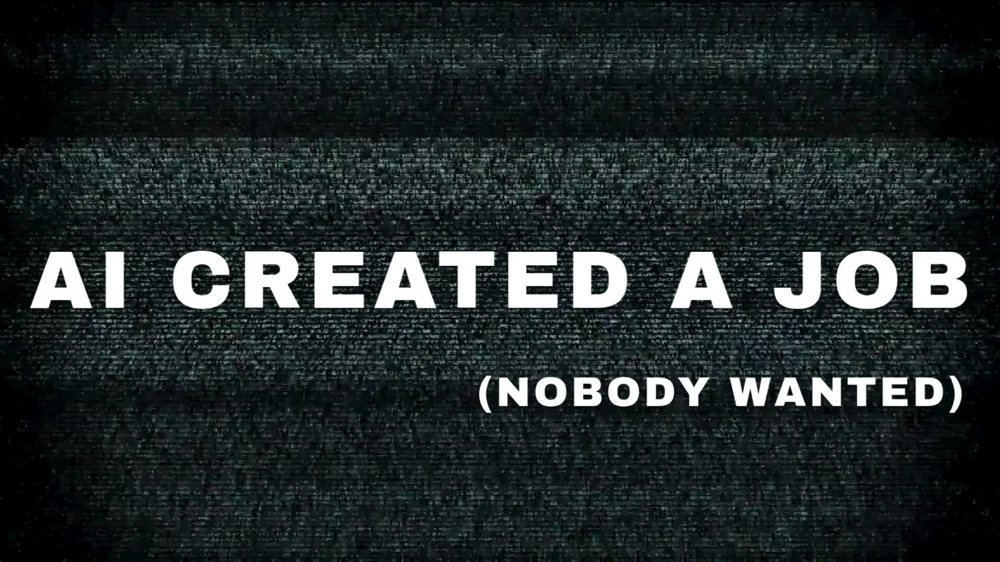
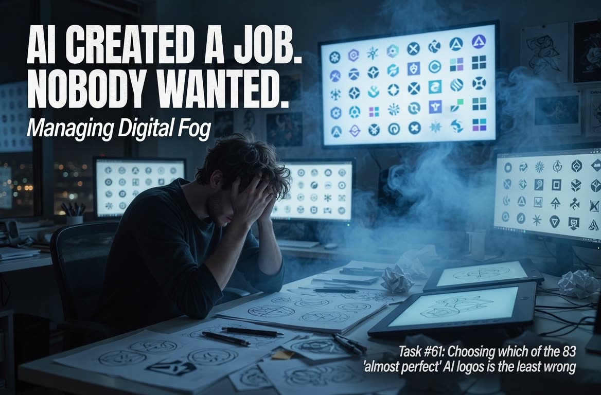

01 / 06
AI CREATED A JOB. (NOBODY WANTED.) Managing Digital Fog.

Managing Digital FogStart Here
Scroll through the film
I’m still connecting
the pieces.
Finding the version. Remembering the decision. Chasing what happens next.
Choose where I start
Start HereWhere do
Where do
I stand?
I can leave, stay with the story, or choose my next step.
The next step opens when I choose Stand up.
One place to begin.
Choose Stand up to enter either path.
BizBuilders AI
PROOF
Fog & Friction Finder
THE WORK BETWEEN THE STEPS

The handoff
0 of 15 answers recorded
The Map starts with my answers.
See where people are carrying what the system can’t.
The process dropped it. I’m still holding it.
Find a task I recognizeFind a task I recognize 6 campaign scenes
These scenes make the extra work recognizable. My Map comes from my answers.
02 / 06
Rewriting the content strategy
03 / 06
Reconciling conflicting outputs
04 / 06
Choosing a logo
05 / 06
Finding the final summary
06 / 06
Keeping the strategy in view
Watch the longer PROOF concepts Two cuts
Follow the connection.
I start with answers. I check the work before calling a finding observed.
Map
My answers give me an initial business pattern and a place to investigate.
From my answersTrace
I follow one recurring task through its context, decisions and handoffs.
Observed only after examinationBuild
BizBlueprint defines the change. BBAI builds the agreed connections.
Proposed until implementedCheck
I compare the work within the agreed scope before expanding it.
Evidence of what changedHow PROOF finds the fog
My 15 answers describe how work starts, moves and reaches done. The first readout keeps the answer pattern separate from assumptions about its cause or impact.
A PROOF Trace follows a recurring task to check what is happening. Evidence from that examination is labeled as observed only after it has been documented.
What PROOF Trace includes
I follow one recurring task through its context, decisions and handoffs. We agree on scope, access, delivery and terms before the examination begins.
Show the math before I begin
Personal Scan
8 answers, each worth 0, 1 or 2. Score = round(100 × total ÷ 16). Carrying it: 0 to 49. Clear enough: 50 to 100.
Momentum Map
15 answers, each worth 0, 1 or 2. Score = round(100 × total ÷ 30). Fragmented: 0 to 24. Stalled: 25 to 49. Scaling: 50 to 74. Compounding: 75 to 100.
These are answer-based scores. They do not measure health, hours lost, productivity or recovered momentum. Every selected answer and point value is shown with the result.
Give growth
a path to follow.
BizBot Mrktng opens after BBAI completion is reviewed and recorded.
Why the next stage is locked
A Map result doesn’t establish that incoming interest has an owner, the needed context, or a clear next action. The BBAI review checks the agreed operating flow before growth access is granted.
The product page and product data require account permissions in the live implementation. This review only depicts that state.
A SMALL DAILY PRACTICE
What am I carrying?
What matters?
What can I do next?
Digital De-Fog DailyOne loose end.
One loose end.
One next step.
First month is on me.
I’m covering a month to make room for a useful next action.
Pay $7.77 forward
I match every contribution. Each $7.77 contribution gives you one additional month of DDD access.
One payment. No automatic renewal. Sharing is optional.
Offer copy for review. This page does not take payments or allocate funded access.